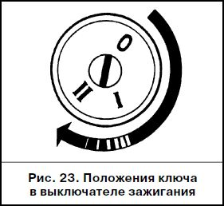
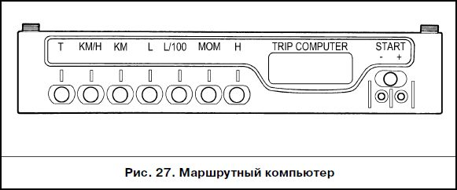
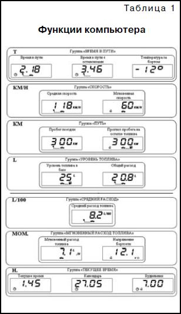

ОПИСАНИЕ АВТОМОБИЛЯ:Органы управления и приборы
 ВЫКЛЮЧАТЕЛЬ ЗАЖИГАНИЯ
Положения ключа в выключателе зажигания показаны на рис.26.0 – «выключено».
Все выключено, ключ вынимается. При вынутом ключе срабатывает механизм запирающего механического противоугонного устройства. Для полного блокирования вала рулевого управления поверните рулевое колесо вправо или влево до щелчка. Для выключения противоугонного устройства вставьте ключ в выключатель зажигания и, слегка поворачивая рулевое колесо вправо/влево, переведите ключ в положение I. Предупреждение
Категорически запрещается выключать зажигание и вынимать ключ из замка зажигания во время движения – это приводит к резкому увеличению нагрузки на педаль тормоза и блокированию рулевого управления.
I – «зажигание».
Включено зажигание, ключ не вынимается.II – «стартер».
Включен стартер, ключ не вынимается. Положение ключа не фиксированное: при снятии нагрузки ключ возвращается в положение I. Выключатель зажигания имеет блокировку, препятствующую включению стартера при работающем двигателе. Для повторного пуска двигателя после неудачной попытки переведите ключ из положения I в положение 0 и затем снова включите стартер. Выдача предупреждения сигнализирует об оставленном ключе в замке зажигания. Если зажигание выключено, то при открывании двери водителя зуммер издаёт прерывистый звуковой сигнал (трель), если в замке зажигания оставлен ключ. Выдача предупреждения сигнализирует об оставленных включенными габаритных огнях. Если зажигание выключено и ключ вынут из замка зажигания, то при открывании двери водителя зуммер издает два звуковых сигнала, если остались включенными лампы габаритных огней.
МАРШРУТНЫЙ КОМПЬЮТЕР
 Нажатие на любую кнопку, при выключенном зажигании, включает ночную подсветку индикатора, а кнопка “START” отключает звуковой сигнал будильника.
Для обнуления всех накапливаемых параметров:
“Время в пути”,
“Время в пути с остановками”,
“Общий расход”,
“Пробег поездки”
необходимо нажать и удерживать кнопку “START” более 4 с до появления двухтонального звукового сигнала.
 Индикация следующих параметров:
“Средняя скорость”,
“Средний расход топлива”,
“Прогноз пробега на остатке топлива”
осуществляется при выполнении условий:
пробег поездки более 1км и время поездки без учета остановок более 1мин;
до выполнения этих условий на индикацию выводятся символы “----”.
Компьютер имеет 3 сигнализатора:
“Превышение скорости”,
“Пробег на остатке топлива”
и “Напряжение бортовой сети”.
При выходе контролируемого параметра за пределы установленного значения:
предельной скорости (20–200) км/ч в зависимости от установки;
пробега на остатке топлива меньше 50 км;
напряжения бортовой сети ниже 10.8 В или выше 14.8 В
символ колокольчика начинает мигать и вырабатывается звуковой сигнал, при этом на индикатор выводится значение контролируемого параметра.
Сброс звукового сигнала производится кнопкой “START”.
После сброса звукового сигнала индикация параметра, вышедшего за пределы установленного значения, сопровождается мигающим символом колокольчика.
Когда параметр принимает нормальное значение, аварийная сигнализация прекращается.
Для установки или снятия режима контроля необходимо выбрать контролируемую функцию и кнопкой “START” установить или сбросить символ колокольчика.
Сброс или установка звукового сигнала подтверждения нажатия клавиш производится в режиме функции “Время в пути” кнопкой “START”.
В режиме “Мгновенный (средний) расход топлива”, когда мгновенная (средняя) скорость меньше 5 км/ч, показания отображаются в л/ч и в л/100 км, когда больше.
В режиме “Время в пути (с остановками)” показания отображаются в мин., сек при времени меньше часа, в ч., мин при времени больше часа и в ч. при времени больше 99 ч. 59 мин.
При снятом аккумуляторе ход часов и все накапливаемые параметры сохраняются не менее 1 мес.
Корректировка функций компьютера
Коррекция хода часов
Нажать кнопку “START” в режиме “Текущее время”.
По шестому сигналу точного времени нажать кнопку “Н”, при этом происходит обнуление разрядов минут, разряды часов корректируются до ближайшего значения, отсчет секунд должен начинаться с нуля.
Установка текущего времени (календаря)
Нажать кнопку “START” в режиме “Текущее время” (“Календарь”).
Кнопками “+”,“–” установить нужное значение часов (дня).
Нажать кнопку “START”.
Кнопками “+”,“–” установить нужное значение минут (месяца).
Нажать кнопку “START” для завершения установки времени (календаря).
Установка будильника
Нажать кнопку “START” в режиме «Будильник».
Кнопками “+”, “–” установить нужное значение часов.
Нажать кнопку “START”.
Кнопками “+”, “–” установить нужное значение минут.
Нажать кнопку “START” для завершения установки будильника.
В режиме “Текущее время” будет светиться символ будильника (будильник включен).
Выключение будильника
Нажать кнопку “START” в режиме “Будильник”.
Нажать кнопку “Н” для выключения будильника.
В цифровых разрядах появится “--.--”, а в режиме “Текущее время” символ будильника светиться не будет (будильник выключен).
Регулировка яркости подсветки индикатора
При включенных габаритных фонарях регулировка уровня подсветки производится регулятором освещения шкалы приборов.
При выключенных габаритных фонарях регулировка уровня подсветки производится программно:
Нажать кнопку “START” в режиме “Время в пути с остановками”.
На индикаторе будут высвечиваться все одиночные сегменты (пиктограммы), что является признаком режима регулировки уровняподсветки, а в цифровых разрядах будет высвечиваться число, соответствующее уровню подсветки в процентах от максимального значения.
Кнопками “+”,“–” установить необходимый уровень яркости подсветки.
Нажать кнопку “START” для завершения режима регулировки яркости.
Тарирование датчика уровня топлива
Для проведения коррекции необходимо слить весь бензин из бака.
Нажать и удерживать кнопку “START” более 2 с в режиме “Уровень топлива”.
На индикаторе появится мигающая цифра “0”.
Нажать и удерживать кнопку “L” в течение 1с до появления звукового сигнала подтверждения.
После этого на индикаторе появится мигающая цифра “3”.
Залить в бензобак с помощью мерной емкости 3 л бензина, выждать время, необходимое для успокоения датчика уровня топлива, нажать и удерживать кнопку “L” 1с до появления звукового сигнала подтверждения.
Продолжить эту процедуру до максимального значения 39 л, после которого компьютер автоматически выходит из режима.
Установка сигнализатора превышения скорости
Нажать кнопку “START” в режиме “Средняя скорость”.
Кнопками “+”,“–” установить требуемый порог скорости.
Нажать кнопку “START” для выхода из установки сигнализатора превышения скорости.Точность и предельные значения некоторых функций
Диапазон показаний часов . . . . . . . . . . . . . . . . 0 ч 00 м–23 ч 59 м
Уход часов за сутки при (25±10) °С, не более . ρ 3 с
Диапазон показаний внешней температуры . –40 °С...+60 °С
Максимальное значение времени в пути . . . . ☺ 999 ч 50 м
Максимальное значение времени в пути
с остановками . . . . . . . . . . . . . . . . . . . . . . . . . . . ☺ 999 ч 50 м
Максимальное значение общего расхода . . . ☺ 9999 л
Максимальное значение общего пробега . . . . ☺ 9999 км
☺ При переполнении одного из этих параметров происходит сброс
всех накапливаемых параметров: “Время в пути”, “Время в пути с оста-
новками”, “Общий расход”, “Пробег поездки” с появлением двухтональ-
ного звукового сигнала.